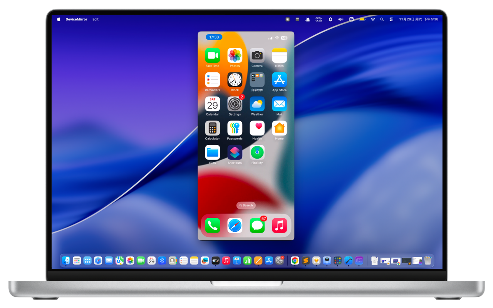
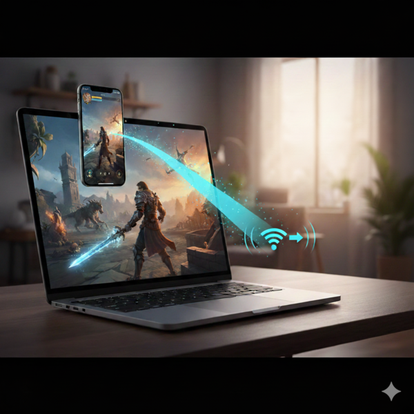
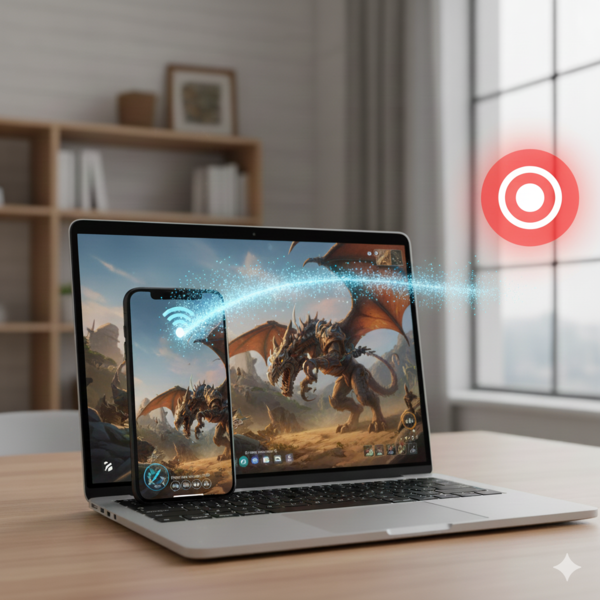

Supports wireless screen mirroring using the AirPlay 2 protocol; no need to install an app on your iPhone/iPad.
Supports connecting your iPhone/iPad to the computer via a cable for stable 60 FPS output, smooth and without lag.
Supports various resolutions for screen mirroring.
Allows you to cast movies and TV shows from online video platforms to your computer for a big-screen experience.
During screen mirroring, you can record your phone's screen and audio as an MP4 file.
Easily record audio playing on your computer into an MP3 file without installing any audio drivers.

Instantly mirror movies and games from your iPhone/iPad to the computer with one click, enjoy the big screen experience.

Easily record your iPhone/iPad screen to capture wonderful moments